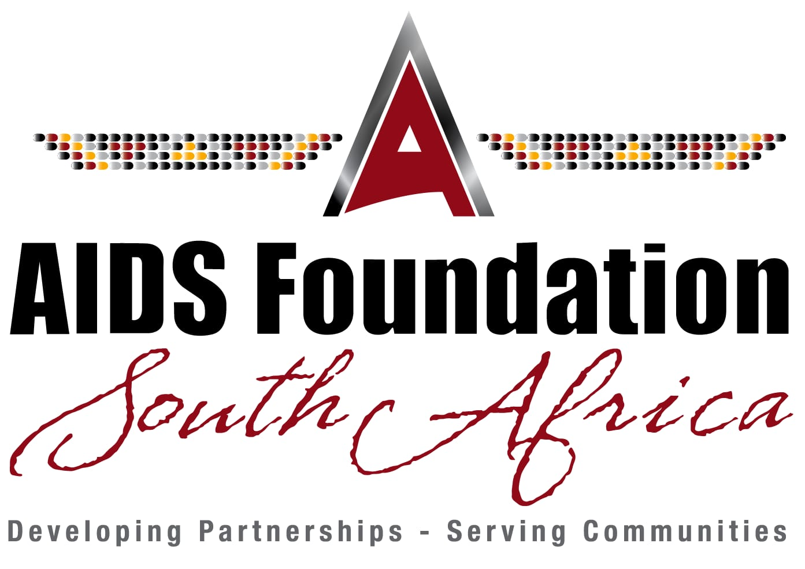
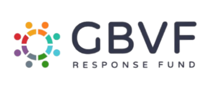

Become a partner
Want to become a sponsor? Help us fight the good fight and help more people in need. Click the button below and join our cause.
Benefits of Being a Partner
- Brand Visibility: We proudly acknowledge our funders across our social media platforms and will feature your organisation's logo on our website.
- Recognition: Formal appreciation posts and mentions will be shared via our social media channels to highlight your partnership and commitment
- On-Site Branding: With your consent, your logo can be displayed at the specific care room you support, as well as included on our official letterhead.
Meet Our Amazing Partners
We are fortunate to work alongside a diverse and committed group of partners whose support enables us to deliver meaningful development opportunities and drive impact within our communities.

